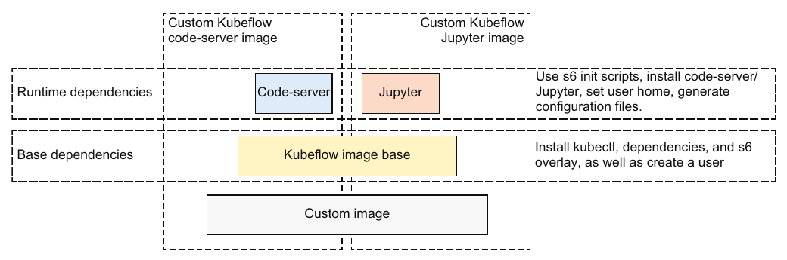

فصل ۷ · صص. ۱۸۳–۲۳۴
تحلیل و آمادهسازی داده
Data analysis and preparation
Machine Learning Platform Engineering, 1st Edition
بخش سوم کتاب آموختهها را روی دو پروژهی واقعی پیاده میکند: یک تشخیصدهندهی کارت شناسایی با YOLO و یک recommender فیلم با MovieLens (ص. ۱۸۴). این فصل گام اول نقشهی ذهنی است، یعنی آمادهسازی داده، چون «garbage in, garbage out» حقیقتی بنیادی است (ص. ۱۸۴). سه بخش دارد: Kubeflow notebook برای تحلیل نزدیک داده و روی همان cluster، با volume و PodDefault و affinity و image سفارشی (صص. ۱۸۴–۱۹۳)؛ انتقال داده بین componentها در KFP v2، از مقدار ساده تا مسیر دادهی بزرگ و انواع artifact (صص. ۱۹۳–۲۰۶)؛ و pipelineهای آمادهسازی برای دو پروژه: دانلود، ذخیره در MinIO، تقسیم به train و validation و test، و بررسی کیفیت (صص. ۲۰۶–۲۳۴).
فهرست خود فصل (از فهرست مطالب کتاب)
- ۷.۱ تحلیل داده — ص. ۱۸۴
- ۷.۱.۱ راهاندازی سرور notebook در Kubeflow — ص. ۱۸۶
- ۷.۱.۲ volumeهای workspace و داده — ص. ۱۸۷
- ۷.۱.۳ configها و affinity و toleration — ص. ۱۸۸
- ۷.۱.۴ سفارشی کردن منو — ص. ۱۹۰
- ۷.۱.۵ ساختن image سفارشی notebook برای Kubeflow — ص. ۱۹۲
- ۷.۲ انتقال داده — ص. ۱۹۳
- ۷.۲.۱ سناریوی ۱: دادن مقدارهای ساده به componentهای بعدی — ص. ۱۹۳
- ۷.۲.۲ سناریوی ۲: دادن مسیر برای دادهی بزرگتر — ص. ۱۹۸
- ۷.۲.۳ مروری بر انواع artifact در KFP v2 — ص. ۲۰۲
- ۷.۳ آمادهسازی داده در عمل — ص. ۲۰۶
- ۷.۳.۱ آمادهسازی داده: تشخیص شیء — ص. ۲۰۶
- ۷.۳.۲ آمادهسازی داده: recommender فیلم — ص. ۲۲۳
از کتاب
مقدمه
دو پروژهی پایانی کتاب در این فصل شروع میشوند (ص. ۱۸۴):
| تشخیص کارت شناسایی | recommender فیلم | |
|---|---|---|
| داده | MIDV-500: ۵۰۰ کلیپ ویدئویی از ۵۰ نوع مدرک هویتی (ص. ۲۰۸) | MovieLens 25M: ۲۵ میلیون امتیاز از ۱۶۲ هزار کاربر برای ۶۲ هزار فیلم (صص. ۲۲۳–۲۲۴) |
| مدل | گونهای از YOLO (ص. ۱۸۴) | recommender روی دادهی جدولی |
| ساختن pipeline | در UI Kubeflow | از داخل یک notebook با SDK (صص. ۲۲۴، ۲۳۰) |
پیش از پروژهها، کتاب مفهومها را با pipeline سادهی جوک توضیح میدهد (ص. ۱۸۴).
از کتاب
۷.۱ تحلیل داده
یک team کامل برای این فهرست نیازها لازم به نظر میرسد؛ Kubeflow notebook همه را با رابط آشنای Jupyter یا VS Code یا RStudio در مرورگر حل میکند، روی همان cluster pipelineها (ص. ۱۸۶).
۷.۱ تحلیل داده
۷.۱.۱ راهاندازی سرور notebook در Kubeflow
صص. ۱۸۶–۱۸۷در ساختن notebook به namespace دقت کنید چون quota و volume را محدود میکند؛ منابع مثل request و limit در Kubernetes رفتار میکنند، پس حد حافظه را کم نگذارید (صص. ۱۸۶–۱۸۷).
۷.۱ تحلیل داده
۷.۱.۲ volumeهای workspace و داده
صص. ۱۸۷–۱۸۸| volume | چیست | کی ساخته میشود |
|---|---|---|
| workspace | زیر /home/jovyan؛ جای پایدار برای محیط و config | هنگام شروع، با storage class پیشفرض cluster |
| داده | PVC از پیش موجود | در زمان اجرا mount میشود |
یک PVC درخواست storage است که یک برنامهی containerشده روی cluster میدهد (ص. ۱۸۷).
۷.۱ تحلیل داده
۷.۱.۳ configها و affinity و toleration
صص. ۱۸۸–۱۹۰- شیء PodDefault در namespace چیزهایی را در زمان اجرا تزریق میکند؛ مثال کتاب
add-proxy-varsاست که متغیرMLFLOW_TRACKING_URIرا میگذارد (صص. ۱۸۸–۱۸۹). - ویژگی affinity pod را به نودهای خاص میکشد؛ toleration اجازه میدهد pod روی نود taintشده بنشیند و podهای بدون toleration را دور میکند؛ کاربرد رایج، کنترل دسترسی به نودهای GPU است (ص. ۱۸۹).
- هر notebook یک CRD است؛ تغییر آن redeploy میکند و دادهی ناپایدار از دست میرود (ص. ۱۹۰).
۷.۱ تحلیل داده
۷.۱.۴ سفارشی کردن منو
صص. ۱۹۰–۱۹۲مدیر cluster با ConfigMap jupyter-web-app-config فهرست imageها و پیشفرضها را تعیین میکند؛ هر گزینه readOnly دارد (صص. ۱۹۰–۱۹۱). با دو affinity small-cpu و xl-cpu، notebookها پیشفرض روی نودهای کوچک میروند و نودهای قوی برای نیاز واقعی میمانند؛ affinity تنها مانع نمیشود، برای محدود کردن واقعی باید taint و toleration هم بگذارید (صص. ۱۹۱–۱۹۲).
۷.۱ تحلیل داده
۷.۱.۵ ساختن image سفارشی notebook برای Kubeflow
صص. ۱۹۲–۱۹۳

stack مرجع JupyterHub دارد، نه Kubeflow notebook، ولی مسئله همان است.
?نوبت شما · مدل دستهبندی تراکنش در notebook با pandas 2.2 آموزش دیده و در image API پیشبینی با pandas 1.5 اجرا میشود، و رفتار پیشپردازش فرق دارد. راه کتاب برای جلوگیری از این چیست؟دیدن پاسخ
notebook را روی همان base image pipeline و serving بسازید و image آن را در همان CI بسازید، تا محیط آزمایش تا حد ممکن شبیه محیط deploy باشد و نسخهها کنترل شوند (صص. ۱۸۶، ۱۹۲–۱۹۳).
از کتاب
۷.۲ انتقال داده
هر component در pod جدا اجرا میشود، پس باید سازوکاری برای دادن و گرفتن داده داشته باشد (ص. ۱۹۳).
۷.۲ انتقال داده
۷.۲.۱ سناریوی ۱: دادن مقدارهای ساده به componentهای بعدی
صص. ۱۹۳–۱۹۸سه تابع generate_joke و count_words و output_result با type hint به component تبدیل میشوند و KFP serialization را انجام میدهد؛ در YAML compileشده، تعریف component، مشخصات deploy و task در DAG دیده میشوند، و KFP با تزریق کد کمکی، مقدار خروجی را در یک dictionary نگه میدارد (صص. ۱۹۶–۱۹۸). برای تابعهای ساده و مقدارهای ساده عالی است (ص. ۱۹۸).
۷.۲ انتقال داده
۷.۲.۲ سناریوی ۲: دادن مسیر برای دادهی بزرگتر
صص. ۱۹۸–۲۰۲flowchart LR
G["generate_joke<br/>Output[Artifact]<br/>فایل jokes.txt در پوشهی artifact"] -->|"مسیر"| C["count_words<br/>Input[Artifact]<br/>خواندن jokes.txt"]
C -->|"int"| O["output_result<br/>رشتهی ساده"]نمودار vault از pp. 199–200.
- نوع
Output[Artifact]پوشهای است که component دادهاش را در آن مینویسد؛ component بعدی باInput[Artifact]همان پوشه را میخواند (صص. ۱۹۹–۲۰۰). - در KFP v1 قاعدههای نامگذاری مثل پسوند
_pathو_fileبود؛ v2 مستقیماً با artifactهای typed کار میکند. مهاجرت یعنی جایگزینیInputPathوOutputPathباInput[T]وOutput[T](صص. ۲۰۰–۲۰۲).
۷.۲ انتقال داده
۷.۲.۳ مروری بر انواع artifact در KFP v2
صص. ۲۰۲–۲۰۶| نوع | برای | ویژگی |
|---|---|---|
Dataset | داده از خام تا feature | metadata دربارهی ویژگیها و تبدیلهای داده (ص. ۲۰۲) |
Model | مدل آموزشدیده | lineage از داده تا پارامترها (ص. ۲۰۳) |
Metrics | سنجههای عددی | مقایسه در طول pipeline (ص. ۲۰۳) |
ClassificationMetrics و SlicedClassificationMetrics | ROC و confusion matrix | نمایش ویژه در UI؛ دومی روی یک برش داده (صص. ۲۰۳–۲۰۴) |
HTML | report تعاملی | نمایش در UI (ص. ۲۰۴) |
Markdown | مستند و model card | خوانا هم بهصورت متن (ص. ۲۰۵) |
Artifact | هر فایل دیگر | پایهی بقیه (صص. ۲۰۵–۲۰۶) |
از کتاب
۷.۳ آمادهسازی داده در عمل
آمادهسازی دو بخش دارد: دانلود و تقسیم به train و validation و test؛ هر کدام یک component (ص. ۲۰۶).
۷.۳ آمادهسازی داده در عمل
۷.۳.۱ آمادهسازی داده: تشخیص شیء
صص. ۲۰۶–۲۲۳مدل YOLOv8 قالب Ultralytics میخواهد: یک فایل config با مسیر ریشه، مسیر تصویرها برای سه بخش، و names با کلاسهای صفرمبنا؛ اینجا فقط id_card؛ برچسب images/id0042.png در labels/id0042.txt است (صص. ۲۰۶–۲۰۷).
flowchart LR
D["download_dataset<br/>دانلود tar، باز کردن<br/>Output[Dataset]"] --> S["split_dataset<br/>train_test_split دو مرحلهای<br/>random_state ثابت"]
S --> T["output_file_contents<br/>نمایش درخت پوشهها برای بررسی"]
S --> V["output_file_contents"]نمودار vault از pp. 214–219.
| گام | نکتهی کتاب |
|---|---|
| دانلود | در production این گام داده را از دیتابیس یا data lake میگیرد و ممکن است validation و logging هم داشته باشد (ص. ۲۰۸) |
| ذخیره | MinIO همراه Kubeflow است، رابط شبیه S3 و نسخهگذاری دارد؛ اعتبارنامهی پیشفرض minio/minio123 را در production عوض کنید و از چیزی مثل Vault استفاده کنید (صص. ۲۰۸، ۲۱۰) |
| component | تابع با @dsl.component و packages_to_install و base_image؛ importها داخل تابع (صص. ۲۱۱–۲۱۲) |
| تقسیم | train_test_split دو بار، با random_state برای تکرارپذیری (صص. ۲۱۵–۲۱۷) |
| pipeline | وقتی split_op خروجی download_op را میگیرد، KFP خودش ترتیب را تضمین میکند (ص. ۲۱۹) |
اجرای کامل روی ماشین نویسنده حدود ۳۰ دقیقه طول میکشد (ص. ۲۲۲). هشدار log: progress bar و log پرحجم در runهای تکراری دیسک را پر میکند؛ اگر MinIO روی نود Kubernetes باشد، diskPressure نود را از pod خالی میکند؛ در production چرخش و بایگانی خودکار log بگذارید (ص. ۲۲۳).
۷.۳ آمادهسازی داده در عمل
۷.۳.۲ آمادهسازی داده: recommender فیلم
صص. ۲۲۳–۲۳۴شش component که در عمل بعضیشان ادغام میشوند تا جابهجایی داده کم شود (ص. ۲۲۴):
| component | نکته |
|---|---|
| دانلود | مثل قبل، مستقیم در output_path (ص. ۲۲۴) |
| unzip | containerized Python component با target_image: image در زمان build ساخته و push میشود؛ به Docker daemon نیاز دارد (صص. ۲۲۵–۲۲۶) |
| تبدیل CSV به Parquet | Parquet ستونی، کوچکتر، با امکان shard؛ با pandas و fastparquet (صص. ۲۲۶–۲۲۷) |
| تقسیم | ورودی Parquet، خروجی پوشهای با سه Parquet (ص. ۲۲۷) |
| آپلود به MinIO | هم فایل هم پوشه؛ upload_file_name چون نام OutputPath را Kubeflow تعیین میکند (صص. ۲۲۸–۲۲۹) |
| QA | چهار فایل مورد انتظار هست؟ train حدود ۷۵٪ کل است؟ با PyArrow (صص. ۲۲۹–۲۳۰) |
اجرا از notebook داخل cluster اعتبارنامه نمیخواهد چون متغیرهای محیطی تزریق شدهاند؛ در راهاندازی چندکاربره، service account برای RBAC لازم است (ص. ۲۳۰).
در stack مرجع، بررسیهای کیفیت داده بین لایهها بهعنوان gate برنامهریزی شدهاند؛ component QA کتاب نسخهی کوچک همان است.
?نوبت شما · برای برش آموزش مدل دستهبندی تراکنش، کدام دو بررسی کتاب را حتماً میگذارید، و چه بررسیای از فهرست کیفیت stack مرجع اضافه میکنید؟دیدن پاسخ
وجود همهی فایلهای مورد انتظار و نسبت اندازهی train به کل، که دو خطای رایج یعنی فایل گمشده و اندازهی نادرست را میگیرند (صص. ۲۲۹–۲۳۰)؛ کتاب میگوید schema را هم اعتبارسنجی کنید (ص. ۲۳۰). از فهرست stack مرجع، بررسی نشت دادهی شخصی مهم است، چون متن تراکنش ممکن است شمارهی کارت داشته باشد.
مرور
بدهبستانها در یک نگاه
| انتخاب | چه میدهد | چه میگیرد |
|---|---|---|
| notebook روی cluster | نزدیک داده، GPU موردی، محیط شبیه deploy | منابع قفلشده اگر notebook خاموش نشود (صص. ۱۸۶–۱۸۷) |
| affinity تنها | پیشفرضگذاری بدون انسداد | نودهای قوی هنوز podهای دیگر را میپذیرند (ص. ۱۹۲) |
| دادن مقدار | ساده | فقط برای مقدار کوچک (ص. ۱۹۸) |
| دادن مسیر artifact | بدون کپی و بدون OOMKilled | کار با فایل در هر component (صص. ۱۹۸، ۲۱۴) |
| lightweight Python component | بیDockerfile | نصب وابستگی در هر اجرا (ص. ۲۲۵) |
| containerized Python component | شروع سریع، وابستگی پیچیده | Docker daemon و registry لازم است (صص. ۲۲۵–۲۲۶) |
| componentهای ریز | نمایش انتقال داده، آزمون جدا | جابهجایی دادهی بیشتر؛ در عمل ادغام میشوند (ص. ۲۲۴) |
| log پرحجم | بازخورد و debug | پر شدن دیسک و diskPressure (ص. ۲۲۳) |
مرور
نکتههای کلیدی
- تحلیل داده دو نیاز متضاد دارد: نزدیک داده اجرا شود تا دادهی عظیم پردازشپذیر باشد، و دسترسی موردی به منابع گران مثل GPU بدهد که بالا و پایین شوند (صص. ۱۸۴–۱۸۶).
- یک notebook روی همان cluster و با همان base image pipeline محیط آزمایش را تا حد ممکن شبیه محیط deploy میکند، و image آن در همان CI ساخته میشود (ص. ۱۸۶).
- یک notebook با GPU منابع را برای podهای دیگر قفل میکند؛ قاعدهی چرخهی عمر بگذارید که در زمان بیکاری متوقف شود (ص. ۱۸۷).
- هر component در pod جدا اجرا میشود، پس داده باید صریح منتقل شود؛ این جایی است که تازهکارها و باتجربهها هر دو گیر میکنند (ص. ۱۹۳).
- دادهی بزرگ را با مسیر بدهید، نه با مقدار: هر pod حد حافظه دارد و عبور از آن
OOMKilledاست؛ کپی ۱۰ گیگابایت برای پنج component یعنی ۵۰ گیگابایت (صص. ۱۹۸، ۲۱۳–۲۱۴). - نسخهی KFP v2 انتقال داده را با artifactهای typed انجام میدهد:
Input[T]وOutput[T]باDatasetوModelوMetricsوClassificationMetricsوHTMLوMarkdownوArtifact(صص. ۲۰۰–۲۰۶). - یک containerized Python component وابستگیها را در زمان build نصب میکند، نه هر بار در زمان اجرا؛ سریعتر بالا میآید و وابستگیهای پیچیده را تحمل میکند (صص. ۲۲۵–۲۲۶).
- فرضهای داده را زود اعتبارسنجی کنید: یک component QA ساده دو خطای رایج، یعنی فایل گمشده و اندازهی نادرست، را میگیرد (صص. ۲۲۹–۲۳۰).
تمرین
خودتان را بسنجید
پرسشها و پاسخها مال vault است و از روی یادداشتهای بالا نوشته شده؛ پاسخها به صفحههای کتاب ارجاع میدهند.
۱چرا کتاب notebookها را روی همان cluster و با همان base image pipelineها اجرا میکند؟دیدن پاسخ
تا تحلیل نزدیک داده باشد و محیط آزمایش تا حد ممکن شبیه محیط deploy، با نسخهگذاری و CI یکسان برای imageها (ص. ۱۸۶).
۳چرا دادهی ۱۰ گیگابایتی را با مقدار بین componentها نمیدهیم؟دیدن پاسخ
هر component در pod با حد حافظه اجرا میشود و بار کردن دادهی بزرگ به OOMKilled میرسد؛ و کپی برای پنج component یعنی ۵۰ گیگابایت. مسیر artifact را بدهید (صص. ۱۹۸، ۲۱۳–۲۱۴).
۵خود component QA recommender چه چیزی را بررسی میکند و چرا زود؟دیدن پاسخ
وجود چهار فایل مورد انتظار و اینکه train حدود ۷۵٪ کل است؛ خطا در مرحلهی تولید داده ارزانتر از پاییندست پیدا و درست میشود (صص. ۲۲۹–۲۳۰).
مکمل
فراتر از کتاب
مکمل vault، نه از متن کتاب.
- فایلهای کوچک بسیار برای object storage گراناند؛ کتاب داده را یک tar میگیرد تا انتقال کارا باشد (ص. ۲۰۹)، و همین دلیل است که برای دادهی جدولی Parquet با row groupهای بزرگ بر هزاران CSV کوچک برتری دارد.
- تقسیم تصادفی برای دادهی زمانی خطرناک است: برای مدلی که روی آینده پیشبینی میکند، تقسیم بر اساس زمان، مثلاً آموزش تا ماه قبل و آزمون روی ماه آخر، به رفتار production نزدیکتر است.
قدمهای بعدی
ادامه بدهید
پیوندها
- فصلهای مرتبط: فصل ۵: ارکستراسیون pipelineهای ML که componentهای مبتنی بر
component.yamlرا ساخت، فصل ۸: آموزش و اعتبارسنجی مدل: بخش ۱ که روی همین داده YOLO را آموزش میدهد، و فصل ۹: آموزش و اعتبارسنجی مدل: بخش ۲ که داده را با PVC و PyArrow کاراتر میکند.